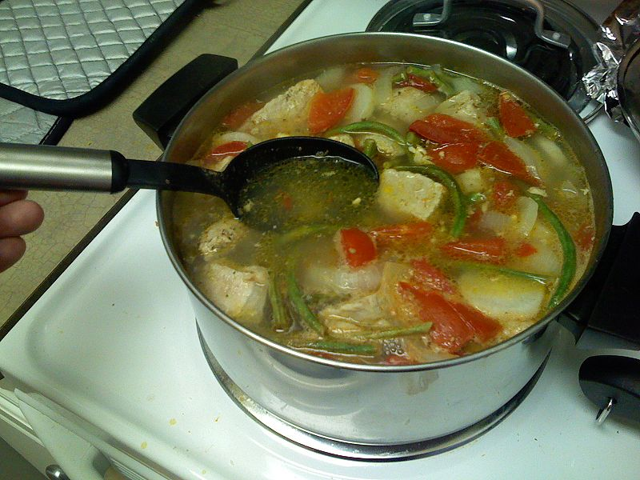

Pork Sinigang

Image source: unknown author on flickr
Note: results may vary from the image above!
Sinigang - my favourite dish out of the three listed on the site. Savoury and sour, this is
a Filipino soup that uses tamarind as its souring agent. Sinigang often uses meat or seafood
together with tomatoes, garlic and onions - though many other vegetables can be used, including
peppers to add spice to the dish. This dish is perfect for a rainy day when you need warming up.
Recipe source: Robyn Michelle on allrecipes
- 1 tablespoon of vegetable oil
- 1 small onion, chopped
- 1 teaspoon of salt
- 1 piece of fresh ginger, chopped
- 2 plum tomatoes, diced
- 1 pound of bone-in pork chops
- 4 cups of water
- 1 pack of tamarind soup base
- 1/2 pound of fresh green beans, trimmed
- Heat the vegetable oil in a skillet over medium heat.
- Stir in the onion then cook and stir for about 5 minutes until they soften.
- Season with salt and stir in the ginger, tomatoes and pork.
- Cover and reduce heat to medium-low. Turn pork occasionally until browned.
- Pour in water and tamaring soup base, bring to a boil then reduce heat.
- Continue simmering until the pork is tender and cooked through.
- Stir in green beans and cook until tender.
- Enjoy!
Return to Home